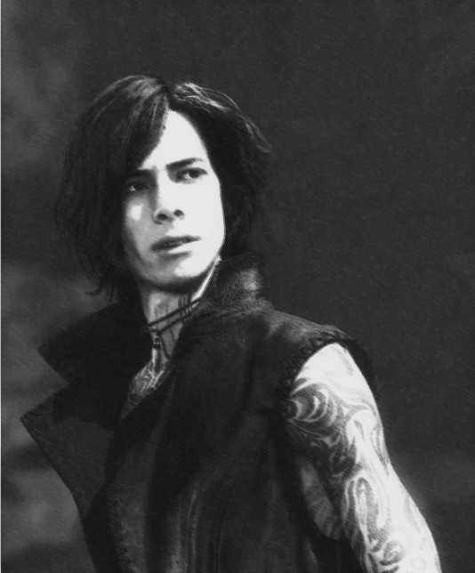

Статус: Таинственный заказчик / Человеческая половина
Вселенная: Devil May Cry 5
Фамильяры и оружие: Грифон, Тень, Кошмар и серебряная трость
«Спаситель, не имеющий ни сил, ни желаний...»
Загадочный юноша, цитирующий поэзию Уильяма Блейка.
Лишённый собственной физической мощи, он управляет тремя демоническими фамильярами и стремится воссоединиться со своей второй половиной.
ДОСЬЕ ПЕРСОНАЖА V (Devil May Cry)
